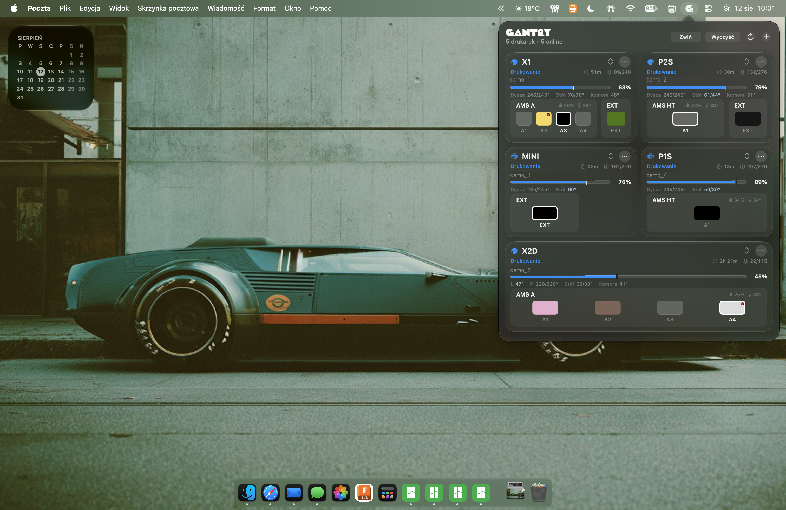

01
Status na żywo
Postęp, ETA, warstwy, temperatury i stan zadania odświeżane w jednym spokojnym widoku.

Twój warsztat. Na żywo.
Lokalny monitor floty drukarek 3D. Status, postęp, temperatury i filament — bez chmury, bez otwierania pięciu różnych aplikacji.

01 / PODGLĄD
Jedno lekkie narzędzie zbiera najważniejsze dane z całego warsztatu i pokazuje je dokładnie tam, gdzie ich potrzebujesz.
02 / MOŻLIWOŚCI
01
Postęp, ETA, warstwy, temperatury i stan zadania odświeżane w jednym spokojnym widoku.
02
Kolory, aktywne sloty, wilgotność i temperatura modułów filamentu.
03
Błędy, zakończenie zadania i problemy z materiałem — bez patrzenia na ekran drukarki.
04
Adaptacyjny układ, tryb kompaktowy i trwała kolejność kart. Pięć czy piętnaście urządzeń — interfejs pozostaje czytelny.
03 / WSZĘDZIE
GANTRY / MACOS
Natywne okno przy pasku menu. Jedno kliknięcie i widzisz cały warsztat.
04 / START
Wybierz wersję dla swojego systemu z najnowszego wydania.
Gantry skanuje sieć lokalną lub importuje konfigurację z Bambu Studio.
Statusy, filament i alerty pojawiają się automatycznie.
05 / OPEN SOURCE
Kod na licencji MIT. Bez ukrytej telemetrii. Bez konta. Bez blokowania funkcji za subskrypcją.
View on GitHub ↗06 / FAQ
Nie. Gantry komunikuje się z drukarkami bezpośrednio w sieci lokalnej.
Bambu Lab, urządzenia Klipper/Moonraker oraz PrusaLink. Obsługa kolejnych systemów jest rozwijana.
W macOS możesz użyć systemowego pęku kluczy. Windows korzysta z DPAPI, a Linux z Secret Service.
Nic. Projekt jest darmowy i dostępny na licencji MIT.